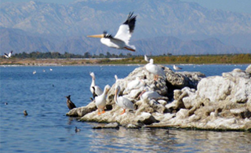

Observations and documentation of physical, chemical, and biological aspects of environment using monitoring equipment installed at the requested site.
Environmental Data Gathering
Collection, transfering, storing, and real time processing of the environmental data.
The collected/processed data could be accessed/retrieved by the customer online as web application, web service, or static data files.
 |
Water Quality
Conductivity, pH, ORP, dissolved oxygen, salinity, total dissolved solids, resistivity, density, and temperature Air Quality:Temperature, barometric pressure, wind speed and direction |
Wildlife Monitoring
Monitoring of wildlife activity and photo/video registration of events triggered by motion and proximity sensors.
|  |
Monitoring Human Disturbances of Wildlife Species
Dynamics of human activities at the site. Monitoring Wildlife ActivityWildlife Activity registration at the site. |